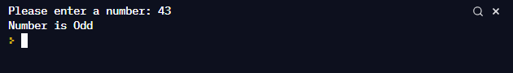

<div class="info-text"><div class="info-body s-rte"><div style="margin:0px;padding:0px;color:#78797a;font-family:'Miller Text Rom', serif;font-size:16px;white-space:pre-wrap;">
    <div class="public-DraftStyleDefault-block public-DraftStyleDefault-ltr" style="margin:0px;padding:0px;"><span style="font-weight:bold;">Your challenge is to create a simple program that determines if a inputted number is even or odd: </span></div>
    </div>
    <div style="margin:0px;padding:0px;color:#78797a;font-family:'Miller Text Rom', serif;font-size:16px;white-space:pre-wrap;">
    <div class="public-DraftStyleDefault-block public-DraftStyleDefault-ltr" style="margin:0px;padding:0px;"><span style="font-weight:bold;"> - </span>Provide background info - "This program will help determine if a number is even or odd"</div>
    </div>
    <div style="margin:0px;padding:0px;color:#78797a;font-family:'Miller Text Rom', serif;font-size:16px;white-space:pre-wrap;">
    <div class="public-DraftStyleDefault-block public-DraftStyleDefault-ltr" style="margin:0px;padding:0px;">&nbsp;</div>
    </div>
    <div style="margin:0px;padding:0px;color:#78797a;font-family:'Miller Text Rom', serif;font-size:16px;white-space:pre-wrap;">
    <div class="public-DraftStyleDefault-block public-DraftStyleDefault-ltr" style="margin:0px;padding:0px;"><span style="font-weight:bold;">The results should then be shown on the screen:</span></div>
    </div>
    <div style="margin:0px;padding:0px;color:#78797a;font-family:'Miller Text Rom', serif;font-size:16px;white-space:pre-wrap;">
    <div class="public-DraftStyleDefault-block public-DraftStyleDefault-ltr" style="margin:0px;padding:0px;">- Ask the user to input a number</div>
    <div class="public-DraftStyleDefault-block public-DraftStyleDefault-ltr" style="margin:0px;padding:0px;">- Program will determine if it is even or odd</div>
    <div class="public-DraftStyleDefault-block public-DraftStyleDefault-ltr" style="margin:0px;padding:0px;">- Respond to the user with "Your chosen number is Even or Odd"</div>
    <div class="public-DraftStyleDefault-block public-DraftStyleDefault-ltr" style="margin:0px;padding:0px;">&nbsp;</div>
    <div class="public-DraftStyleDefault-block public-DraftStyleDefault-ltr" style="margin:0px;padding:0px;"><span style="color:#78797a;font-family:'Miller Text Rom', serif;font-size:16px;white-space:pre-wrap;">-------------------- INPUT/OUTPUT Check section --------------------------------</span></div>
    <div class="public-DraftStyleDefault-block public-DraftStyleDefault-ltr" style="margin:0px;padding:0px;"><span style="color:#78797a;font-family:'Miller Text Rom', serif;font-size:16px;white-space:pre-wrap;"></span>
    <br>
    <br>
    <br>